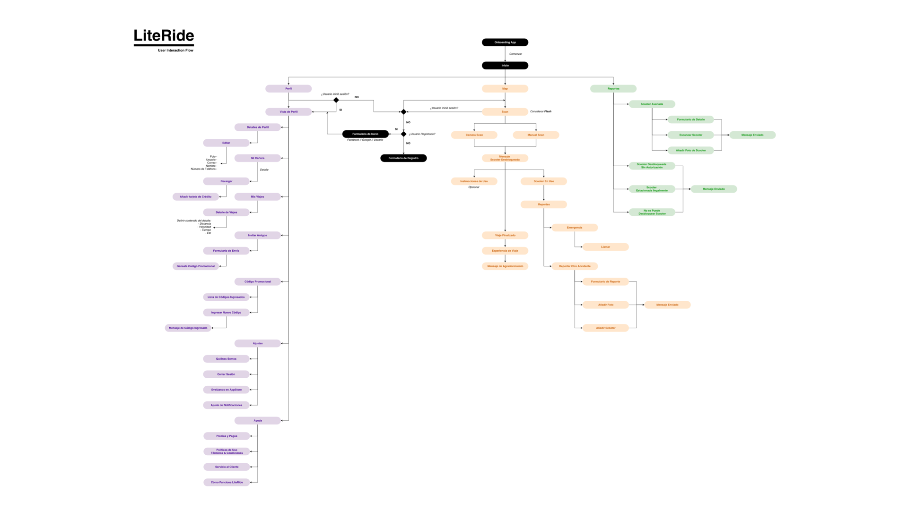
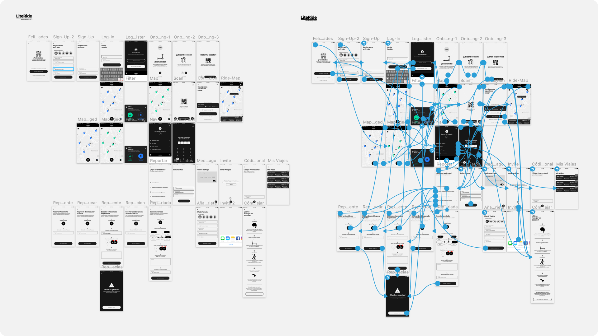
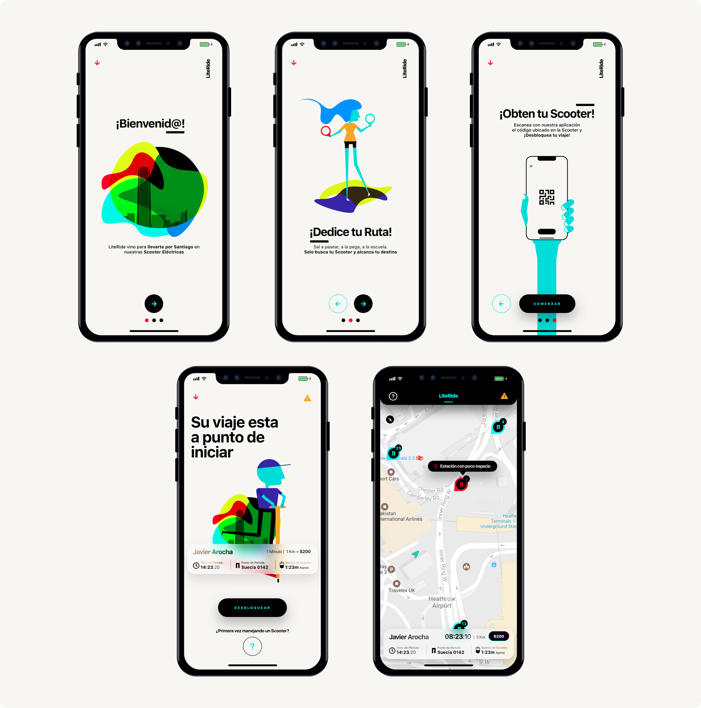

LiteRide
Lead Designer | UX | UI
Electric Scooters for everyone in Santiago! LiteRide its a Work in progress project that pretend to be another public transit option for the citizen in Santiago. We are working with the goverment and a team of professionals engineers in Santiago in order to make a new way of transit in the city. Santiago has a huge atmosphere problem, thats why in LiteRide we are developing a new way to move over the city in an special way: Electric Scooter.
I had have the opportunity to make a small research for this project and begin an UX process like Benchmarking, Heuristic Test, for another apps in orden to define a User Flow that will soon became in Wireframes, Prototypings, Testings and Look & Feel for it self. Lets take a look!
- User Experience Design
- Mobile Apps
- Project Management
- Front End Design
What a problem! How do i solve this huge one?

OKAY! this step makes me an idea that how i cant focus this. Still an Hipothesis, lets continue with something more powerfull.
>

Wow, this was a lot of iteration. Wireframing, Prototyping, some of the previous steps i followed to test this Hipothesis and we're done!. Users understand it a lot (Thanks God).

Awesome, one of my favorite process as a User Interface Designer: "Look & Feel". Its time to paint with trends, artistics thoughs and more in order to make this product a big value one. Aproved!. For this time, i'm work in progress with the Mockups, i hope soon this product will see the light.